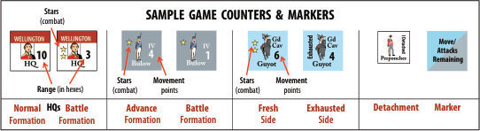
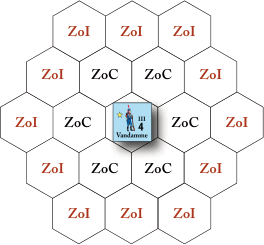
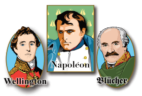

RULEBOOK
Waterloo Campaign 1815
Introduction
Waterloo Campaign, 1815 is a low complexity wargame focused on French Emperor Napoleon Bonaparte's 1815 Belgian campaign that resulted in his final defeat at the Battle of Waterloo on June 18th. He was opposed by a Coalition of Anglo-Allied forces under the Duke of Wellington and Prussian forces under Generalfeldmarschall von Blücher.
Set Up
After deciding which scenario to play and who will play each side, the players refer to the historical setup found at the end of these rules, marking which hex units begin the scenario, or on which turn and at which map entry hex they arrive as a reinforcement.
Key Concepts and Definitions

The players should refer to this list as a guide to understanding the terms and key concepts of Waterloo Campaign, 1815.
- Anglo-Allied:
- Coalition forces in white, commanded by the Wellington HQ. When the rules specify Anglo-Allied, Prussian forces are excluded.
- Advance Formation:
- Most units move around the map in Advance formation until they enter an enemy Zone of Control, when Infantry units must flip to Battle formation.
- Artillery:
- All Corps have artillery factored into their capabilities during combat. The French have a Grand Battery Artillery Detachment that has special capabilities when participating in an attack (see Grand Battery below).
- Attack:
- The acting player designates one unit to attack an adjacent enemy unit. Dice are rolled and modified, with the lower total losing the engagement. Attacking is voluntary, not mandatory.
- Battle Formation:
- When an Infantry unit enters an enemy Zone of Control it must flip to Battle formation. Battle formation represents the unit formed for attack or defense depending on the situation.
- Cavalry:
- Both sides field Cavalry units that are distinct from Infantry units. Cavalry units have two sides to their counter, Fresh and Exhausted. An exhausted cavalry unit can move and participate in attacks normally, just slower and less effectively. Cavalry has special capabilities in combat.
- Coalition:
- Refers to the Anglo-Allied and Prussian side together.
- Corps:
- Infantry and Cavalry units of roughly corps size, even if not historically designated as such. For ease of identification, Corps use large counters, as distinct from Detachments that are smaller in size.
- Detachments:
- Most Corps in Waterloo Campaign have one or more associated Detachment units that can be placed during Step D of the Command Phase (Detachment Placement). Regardless of whether a Detachment shows an infantry or a cavalry symbol, they behave identically in play. Detachments have a ZoC, and are useful for screening, holding flanks, or as the rearguard when on the strategic retreat. The Grand Battery and Old Guard Detachments have special rules.
- Die:
- Waterloo Campaign uses a six-sided die. It is optimal to have two different color dice, one for each side. (Not included.)
- Empty Hex:
- Take this literally—an empty hex has no units or markers in it. No exceptions!
- Headquarters (HQs):
- The French have three and the Coalition have two HQ markers. These do not represent the location of the named general and his command staff, but are an abstract representation of the armies' center of operations for the game turn. You cannot interfere with an HQ marker or displace it during play. On the Coalition side, the Anglo-Allied and Prussian HQs each cannot influence or affect forces of the other. HQs can be in Normal or Battle mode - Normal mode has greater Command Range, but Battle mode allows the HQ to influence attacks with their Battle Stars. An HQ's Command Range can be traced into and through hexes occupied by enemy or friendly units. ZoCs and ZoIs do not affect Command Range except for the placement of Detachments.
- Formation:
- Infantry units are either on their Advance Formation side (movement of 4) or on their Battle Formation side (movement of 1). Cavalry units are either on their Fresh side (movement of 6) or Exhausted side (movement of 4). During each Organization Phase, units determine their starting formation for the turn depending on their proximity to enemy units.
- French:
- All units in blue, commanded by the Napoleon, Ney, and Grouchy HQs.
- French Grand Battery:
- This special Detachment can be deployed by the Napoleon HQ when on its Battle side. The Grand Battery provides a bonus when attacking.
- Map Entry Locations:
- There are five map entry locations, designated with a “B.” Entry locations on the north map edge are 4006 (Halle), 4015 (north of Waterloo), Hex 4025 (north of Wavre). Entry locations on the south map edge are 1017 and 1018 (Coullet).
- Markers:
- Waterloo Campaign includes several markers that are placed on the map. The Game Turn marker is placed on the game turn track. HQ markers are used on the map, but take note these are markers NOT units, and rules that refer to units do not refer to these markers.
- Movement:
- During the Movement Phase, players alternate choosing a Corps to move. The chosen Corps moves a number of hexes up to the movement allowance of its current Formation. If the Corps moves exclusively along a road, it may use Road Movement to double its movement allowance (Infantry Corps in Battle formation cannot use Road Movement).
- Pass:
- During the Movement and Attack Phases, the players alternate choosing a Corps to move or attack respectively. When a player cannot or chooses not to designate a unit, they must Pass. After a side Passes, they no longer designate units for the remainder of that phase (movement or attack). The side that did not Pass will receive a number of moves or attacks based on a die roll.
- Prussian:
- Coalition forces in gray, commanded by the Blücher HQ. When the rules specify Prussian, Anglo-Allied forces are excluded.
- Road Movement:
- An Infantry Corps in Advance formation or any Cavalry Corps (Fresh or Exhausted) whose entire move is on connected roads may double its movement allowance. Similarly, an HQ in Normal mode that traces its Command Range entirely along roads may double its range. Road movement must remain entirely on connected roads, you cannot mix road and off-road rates.
- Stacking:
- Corps cannot stack or move through each other during movement. No more than one HQ marker or Detachment unit can be placed in a given hex, regardless of whether the hex contains a Corps. Friendly Corps can enter, move through, and/or remain in the same hex as a Detachment.
- Terrain:
- See the Terrain Effects Chart for the effects of terrain on movement and combat. TEC is on separate Player Aid.
- Units:
- Units are combat formations, divided into Corps (Infantry and Cavalry) using larger counters, and smaller Detachments (whatever type). HQ markers are not units.
- Zone of Control (ZoC):
- The six hexes adjacent to a unit are its Zone of Control. Corps units and Detachments have a ZoC. ZoCs can halt or limit enemy movement. There is no additional effect for a hex having more than one ZoC projected into it.
- Zone of Influence (ZoI):
- All hexes within two hexes of a Corps constitute the unit's Zone of Influence. ZoIs restrict enemy movement and both friendly and enemy Detachment placement. A Zone of Influence cannot be blocked, it extends through and beyond enemy units. There is no additional effect for a hex having more than one ZoI projected into it.

Sequence of Play
Command Phase
For each step below, both sides complete the step fully before moving on to the next.
A. HQ Placement Step
Starting with the French, each player first removes their HQs and then replaces them on the map. Each HQ must be placed, on either its Normal or Battle side, in a hex within 3 hexes of an associated unit, even directly on such a unit. The placement hex cannot be in an enemy ZoC or ZoI. In the unlikely event that an HQ has no associated units on the map, place it in any empty hex on the map within 3 hexes of a Brussels to Couillet road hex, even in an enemy ZOC or ZOI.
HQs are markers, not units, and do not move; once placed, an HQ does not change position for the remainder of the turn. An HQ cannot be eliminated and can coexist with an enemy unit in the same hex.
Play Note: This marker represents your command intent. It is not meant to represent a physical presence. Once placed, you cannot interfere with your enemy's HQ in any tangible manner.
B. Blown Unit Return Step
Starting with the French, each player can return to the map up to two blown Corps (removed from the map by a blown result two turns prior). Place these Corps in any empty hex adjacent to an associated HQ, but not in an enemy ZoC or ZoI. If more than two blown Corps are available to return, the player's opponent chooses which two units return, and the remainder are eliminated from play.
Play Note: It is assumed that the enemy player will pick inferior units to return to play, but it's their choice.
C. Cavalry Corps Recovery Step
Exhausted Cavalry Corps not in an enemy ZoC or ZoI are flipped to their Fresh side.
Play Note: Denotes the horses recovering from charging. Don't forget that enemy Detachments have ZoCs.
D. Detachment Placement Step
Starting with the French player, each HQ may place one associated Detachment on the map. The HQ must trace a path to the placement hex either:
• from itself, with a length in hexes up to its own Command Range (if the HQ is Normal mode, not Battle mode, and the path is traced entirely by road, double the Command Range)
OR
• from the Detachment's parent unit, with a length of up to 4 hexes.
The path must be free of enemy ZoC or ZoI for its entire length. The placement hex itself cannot be in any ZoC and ZoI, whether enemy or friendly.
Play Note: This is not a mistake; you cannot place a Detachment in a friendly Zone of Control or Influence. The intent is a Detachment is there to protect a flank, bridge, town, or key road junction that is some distance from your main forces. They are not intended as skirmishers in front of your formation.
Play Note: While each HQ can deploy any associated Detachment, a Corps can only deploy Detachments with their designation. Even if the parent Corps is eliminated, the HQ can still deploy its Detachments.
French Grand Battery (Special Detachment): When the Napoleon HQ is on its Battle side, it can deploy the Grand Battery Detachment to the same hex as any friendly unit within his Command Range, regardless of enemy ZOCs or ZOIs. This path is not traced, it just needs to be within 3 hexes of Napoleon. This counts as the Napoleon HQ's Detachment placement for the turn. Once placed, the Grand Battery cannot move, but can be Recalled.
The Grand Battery adds +1 to the combat roll of its attached Corps when the Corps itself attacks or supports an attack. The Grand Battery only modifies attacks, not defense. If the Grand Battery is left alone in a hex due to an advance of the Corps it is stacked with, it is immediately and automatically Recalled, and can be redeployed on a later game turn. If the Grand Battery is left alone when its stacked unit receives a retreat or any other combat result, the Grand Battery is eliminated and removed from play. Otherwise, the Grand Battery is automatically Recalled at the end of each game turn.
French Old Guard (Special Detachment): When the Napoleon HQ is on its Battle side, it can deploy the Old Guard Detachment to any empty hex within its Command Range, not in an enemy ZOC, but it can be within an enemy ZOI. This counts as the Napoleon HQ's Detachment placement for the turn. Once placed, the Old Guard cannot move, but can be Recalled.
The Old Guard has two Battle Stars, so even when it is attacked while alone in its hex, it gains this die roll modifier. Like all detachments if it is stacked with another friendly Corps during combat, the Old Guard does not add its Battle Stars to the defense or attack.
Play Note: Due to the 1-per-HQ limit, Napoleon can deploy either the Grand Battery or the Old Guard on the same turn, not both.
Design Note: The first miniature I ever painted was a Grenadier from the Old Guard. Therefore, it was impossible for me to design a Waterloo game without an Old Guard unit. I apologize for the extra rule overhead.
E. Detachment Recall Step
Starting with the French, each player may Recall all, some, or none of their Detachments from the map (even one just placed). Detachments can be Recalled from any location, including in enemy ZoC, while surrounded, etc.; no path need be traced. Recalled Detachments become available for placement again the following turn.
Play Note: Essentially, Recalled Detachments must sit out one turn to become available again for placement.
British Line of Communication Angst
If the Anglo-Allied army at the conclusion of Detachment Recall has
three or more Anglo-Allied detachments on the map, eliminated, or any
combination thereof, substitute the Anglo-Allied Hill Corps with two
stars forwith the Hill Corps with one star. At the conclusion of any future
Detachment Recall that there are fewer than 3 Anglo-Allied detachments on the map, substitute the Anglo-Allied Hill Corps with one star
forwith the Hill Corps with two stars.
Historical Note: During the Battle of Waterloo a large portion of Hill's II Corps was deployed at Hal to protect British communications. These forces did not participate in the Battle. This rule captures the impact of Wellington's deployment decision and angst about having his flank turned.
Organization Phase
For each step below, both sides complete the step fully before moving on to the next.
F. Advance Formation
Starting with the French, each Infantry Corps that is not in an enemy ZoC (not ZoI) is set to Advance Formation (flipping from Battle Formation if necessary). This is the only time during a turn that a unit can flip from Battle Formation to Advance Formation.
Play Note: Enemy ZoIs do not affect flipping from Battle to Advance formation.
Play Note: Cavalry recovers from Exhausted to Fresh in Step C, not this step.
G. Battle Formation
Starting with the French, each Infantry Corps in an enemy ZoC is set to Battle Formation (flipping from Advance Formation if necessary).
H. Withdrawal
Each player in alternating fashion, starting with the French, may choose a friendly Corps in an enemy ZoC and have it conduct a retreat, following all the rules of that combat result. Once a player passes, they cannot retreat any further Corps; their opponent may then retreat up to three more Corps in succession before ending the step. Corps that retreat into an enemy ZoC become blown and are placed on the Game Turn Track to return two turns ahead; if not possible, the Corps is eliminated.
Movement Phase
Play Note: Unlike most games, units can move multiple times and in any sequence until both players pass.
Starting with the French, players alternate choosing a Corps to move. Each time it is a player's chance to choose, they must either move a Corps or pass. The same Corps may be chosen multiple times to move during a given Movement Phase, so long as it remains eligible.
Corps Movement
The chosen Corps moves from hex to adjacent hex, in any combination of directions, up to a number of hexes equal to the movement allowance of its current Formation (printed on the counter). A Corps is never required to use its full movement allowance.
Some additional rules and restrictions:
• A Corps may never enter a hex containing another Corps, enemy or friendly, at any time.
• A Corps may move through or remain in a hex containing an HQ marker or friendly Detachment unit.
• Detachments do not move, but occupy the hex they are placed in until recalled during Step E of the Command Phase. HQ markers also do not move, but are removed and placed again during Step A of the Command Phase.
• If a Corps moves exclusively along a road, it may use Road Movement to double its movement allowance (Infantry Corps in Battle formation cannot use Road Movement).
• A Corps cannot enter a hex beyond the Command Range of its associated HQ.
• As the French have three HQs, a moving French Corps must declare which French HQ will be used to comply with this rule for the current move.
• This range is measured in hexes (do not count the hex the HQ is located in, but count the hex occupied by the unit). It can be traced through units, enemy and friendly alike, and is unaffected by ZoCs, ZoIs, or terrain.
• A Corps that begins its movement outside of Command Range must move closer to their HQ until they are within its Range, and thereafter may not voluntarily move further than their HQ's Range. Do not count the hex the HQ is in, only count the hex that the piece is trying to enter.
Play Note: Closer means less distance, not the same distance.
Influence on Movement by Zones of Control and Zones of Influence:
• When an Infantry Corps enters a hex in an enemy ZoI, it must cease movement, but remains in its current Formation.
• When a Cavalry Corps enters a hex in an enemy Cavalry Corps' ZoI, it must cease movement.
• When any Corps enters a hex in an enemy ZoC, it must cease movement and flip to Battle Formation (if not already). Cavalry Corps do not have a Battle Formation and do not flip when entering enemy ZoC.
Play Note: Yes, even an enemy Detachment's ZoC will halt and flip you to Battle Formation.
• An Infantry Corps that begins movement in an enemy ZoC (or a Cavalry Corps in an enemy Cavalry Corps' ZoC) cannot move, and can only exit the enemy ZoC due to a combat result or by withdrawing during Step H of the Organization Phase.
• A Cavalry Corps that begins movement in an enemy Infantry Corps' or detachment's ZoC can only move to an adjacent empty hex not in enemy ZoC; it may continue movement assuming other conditions allow.
Passing
When a player passes:
• The passing player may no longer move any Corps for the remainder of the Movement Phase.
• The passing player's opponent rolls a die and adds 1 for each friendly
unitCorps that is not in an enemy ZoC or ZoI (including reinforcements
available this turn that have not yet entered the map). This modified
result is the maximum number of moves the opponent may make before
ending the Movement Phase (use the mnemonic marker on the Number Track to record the number of moves remaining).
• Any reinforcements that are not yet on the map must be moved onto the map before any units on the map may move.
Play Note: The restriction that units that are off map must enter before units on the map may move ONLY applies after one side has passed, not before.
Reinforcements: Pieces that are off map but available this turn (see scenario rules) enter play during the Movement Phase, counting from the first map edge hex that they enter.
Important: If for any reason an enemy unit or its ZOC occupies the
entry hex or an adjacent hex, the enemy unit must immediately execute
a mandatory three hex Retreat result exactly as if it had
loadslost
an attack
(or, it is Recalled if it is a Detachment). Units that also enter this turn
from that location that cannot enter the map for any reason are kept off
map until there is a hex for them to enter on this or a later turn. A unit
may not shift to another entry hex, but must enter at the indicated location. A player may not voluntarily hold a unit off map if it is possible for
it to enter play, to include after your opponent passes where additional
moves must first be used to bring on all reinforcements before making
other moves.
Play Note: Gamers love to try and interdict enemy reinforcements at the map edges. Simply stated, you cannot, and I have written these rules to reflect this situation. Any loopholes that you perceive are misperceptions. In addition, you must bring on all reinforcements on their turn of entry if at all possible, and again, attempts to do something else are illegal moves.
Attack Phase
Play Note: Unlike most games, a player's units can attack and be attacked multiple times and in any sequence until the unit is removed from the map, is no longer in an enemy ZoC, or a player passes.
Starting with the French, players alternate choosing a Corps to attack an enemy unit in their ZoC. Each time it is a player's chance to choose, they must either attack with a Corps or pass.
The side declaring the attack is the attacker, and the opposing side is the defender. Each attack consists of one attacking Corps (potentially with other attacking Corps in support) attacking one defending unit (which may get support from Cavalry Corps). All attacks are voluntary, never mandatory. An individual unit can participate in any number attacks as either the attacker or defender; the only condition is that a unit can only attack a unit in its own ZoC (adjacent).
Play Note: Other than the French Grand Battery, Detachments can never attack or support an attack, they may only defend.
Attack Resolution
Each player rolls one die and adds any die roll modifiers listed below. The player with the higher total (with modifiers) wins the combat; ties are stalemates. Subtract the lower total from the higher total to determine the specific result of the combat (see Combat Results Table and Explanation below).
Terrain
• The defender (only) adds 1 to their defense roll for terrain as indicated on the Terrain Effects Chart (TEC). A maximum of +1 applies to the defense roll for terrain.
Battle Stars
• The attacking Corps adds its Battle Stars to the attack roll. If the attacking Corps is in Command Range of an associated HQ in Battle mode, add the HQ's Battle Stars as well.
• The defending unit adds its Battle Stars to the defense roll. If the defending unit is in Command Range of an associated HQ in Battle mode, add the HQ's Battle Stars as well.
• A Cavalry Corps charging into a town or chateau hex does not add its Battle Stars to the attack roll. Cavalry Corps still add their +1 Corps support for an attack into a town or chateau hex.
• If a Fresh Cavalry Corps is supporting the attack, it may add its Battle Stars to the attack die roll, then flip the Cavalry Corps to its Exhausted side.
• If the French Grand Battery Detachment is stacked with the attacking Corps or any of the Corps supporting the attack, add its Battle Star to the attack roll.
Attack Support
• The attacker adds 1 to his attack roll for each friendly Infantry Corps (not Detachment) that is in the defenders ZOC.
Cavalry Support
• The attacker adds 1 for each Cavalry Corps (not Detachment) that is adjacent to the attacking Corps, whether or not they are in the defending unit's ZoC. The supporting Cavalry Corps can be either Fresh or Exhausted, but if Fresh it must flip to Exhausted side.
• The defender adds 1 for each Cavalry Corps (not Detachment) that is adjacent to the defending unit, whether or not they are in the attacking Corps' ZoC. The Cavalry Corps can be either Fresh or Exhausted, but if Fresh it must flip to its Exhausted side.
Play Note: Waterloo Campaign uses an unusual Cavalry support concept whereby the unit does not have to be adjacent to the defending unit, just adjacent to the attacker or defender in question. The presence of a Cavalry unit, whether Fresh or Exhausted, represents the value of combined arms attacks in this period. It forces the defenders to remain in square, making them more vulnerable to organic artillery fire. A Fresh Attacking Cavalry unit adding its star bonus simulates a Cavalry Charge, a once per turn capability. The defender cannot Cavalry Charge, but its presence (add 1) simulates local counter charges.
Detachments
• The attacker adds 2 to their attack roll if the defending unit is a Detachment (Detachments stacked with Corps have no effect).
Combat Result Explanation
| Combat Results Table | |
|---|---|
| 0 | Stalemate |
| +1, +2 | Retreat |
| +3, +4 | Blown |
| +5 or more | Eliminated |
Supporting units are never affected by the combat result.
Play Note: Do not forget to flip Fresh Cavalry units that participate in a combat (attacker or defender) onto their Exhausted side.
Stalemate: No effect.
Retreat: Retreat, 1st sentence replace: A unit Retreats by moving three
hexes away from the victorious enemy unit. A Retreating unit can never
enter a hex containing any Corps, friendly or enemy (HQs and friendly
Detachments are allowed), nor a hex in an enemy ZoC (including
Detachment ZoCs). Each hex of Retreat must be further from the
victorious enemy unit. If a unit cannot Retreat under these restrictions,
it becomes Blown instead and is removed from the map (see below).
Detachments that receive a Retreat result are Eliminated if stacked with
a friendly Corps, or Recalled if not.
Blown: A Blown Corps is removed from the map and placed on the Game Track to return two turns later (i.e. 24 hours later). Blown units return to play during Step B of the Command Phase on the turn they occupy on the game turn track. During the last day of a scenario, all Blown results are instead treated as Eliminated. If a Corps attacks a Detachment and receives a Blown result, the Corps must Retreat instead. Detachments that receive a Blown result are Eliminated.
Eliminated: An Eliminated unit is removed from play for the remainder of the game. If a Corps attacks a Detachment and receives an Eliminated result, the Corps must Retreat instead. Each Eliminated unit counts as 3 VP (Corps) or 1 VP (Detachment) for your opponent.
Pursuit
If the defending unit (not attacker) vacates its hex due to any combat result, and the attacking Corps is not in the ZoC of any other enemy unit, the attacking Corps must move into the vacated hex.
Play Note: The attacking unit may continue attacking in subsequent attack opportunities, so long as there is at least one enemy unit in its own ZoC and is otherwise eligible.
After an individual attack is concluded, the players continue alternating declaring attacks with units or passing.
Passing
When a player passes:
• The passing player may no longer attack with any Corps for the remainder of the Attack Phase. Their units defend normally.
• The passing player's opponent rolls a die. This result is the maximum number of attacks the opponent may make before ending the Attack Phase (use the mnemonic marker on the Number Track to record the number of attacks remaining).
End Phase
After both players have passed in an Attack Phase, the turn is over. If this was the last turn, determine the winner, otherwise advance the Game Turn marker and begin a new turn. The French Grand Battery, if in play, is automatically recalled.
Victory Conditions (all scenarios)
After the last turn, players calculate their Victory Points (VPs) as follows:
• Each Eliminated Corps scores 3 VP for the opponent.
• The French Imperial Guard Infantry and Cavalry Corps score 5 VP instead of 3 VP for the Coalition player if Eliminated.
• Each Eliminated unit counts as Victory Points for your opponent.
• The French Old Guard and Grand Battery Detachments score 2 VP instead of 1 VP for the Coalition player if Eliminated.
• At the end of the last turn, if the French can trace a path free of Coalition units or ZoC from hexes 1017 or 1018 (marked with a B) to Halle (4006), near Waterloo (4015), or near Wavre (4025) the French receive 5 VP.
Design Note: The Anglo-Allied army needs to maintain its line of communication to the sea through Brussels and therefore ‘turtling' in a corner of the map to deny a French victory has a penalty.
Compare the two sides' VP to determine the Level of Victory:
• Tactical Victory: The side with the most VPs wins. The Coalition player wins tie games.
Tournament Note: Consider a French Tactical Victory as an historical defeat and a tournament defeat.
• Campaign Victory: If the winning side has a margin of victory of 9 to 11 VP.
Tournament Note: Consider a French Campaign Victory as an historical defeat but a tournament victory.
• Strategic Victory: If the winning side has a margin of victory of 12 VP or greater.
Tournament Note: Consider a French Strategic Victory as an historical and tournament victory.
Historical Note: A great historical question is, what would a French victory look like? Even if Napoleon had won a strategic victory it is not clear that this would have represented more than a reprieve; but who knows? The Austrian and Russian armies were still mustering and moving toward the French frontier, so France was far from out of the woods. However, a successful campaign in the Netherlands (Belgium) would have solidified Napoleon's political situation and allowed him to redeploy the Armée du Nord to defend France's eastern borders.
Prior to Napoleon reentering the picture, the Coalition negotiations in Vienna were tense and had the potential to lead to inter-allied conflict, so would a resurgence of Napoleon's military reputation have led to some negotiated settlement? Any level of Coalition victory puts you back on the historical narrative. Even a French tactical victory is unlikely to change history, just allowing for the writing of another chapter in the story. A French campaign victory places you in a gray area where other circumstances might have allowed Napoleon to turn things around with further victories against the Austrians or the Russians. However, France's limited manpower resources, not to mention horse shortages, may have just delayed the historical outcome a bit more; who can say? As an historical gamer I live to see alternative narratives plausibly play out, which is what I think a strategic victory might represent. For argument's sake, a French strategic victory opens the possibility that you have dramatically changed history.

SCENARIO: The Waterloo Campaign — June 16–18, 1815 – Set-Up
Historical Note: The main scenario begins one day into the campaign, after the French have crossed the Sambre River. As it turns out, the key day of this campaign was not June 18th, the Battle of Waterloo, but June 16th and the twin Battles of Quatre Bras and Ligny, where the ideal conditions for a decisive victory created by Napoleon went astray due to poor staff work, Ney's mistakes, and the Emperor's inability to make up for the collective friction this imposed on his well-conceived plans.
Battle Length: 6 game turns (AM/PM for each of the three days) Start on Turn 3. Skip HQ Placement (Step A), Blown Unit Return (Step B), Cavalry Corps Recovery (Step C). Begin with Detachment Placement (Step D). All units and HQs are in Advance/Normal mode respectively unless otherwise noted to be in Battle Formation.
| French Set Up (All French HQs are in Advance mode) | |
|---|---|
| Unit | Hex Set Up |
| Napoléon HQ & Guard Corps (Drouot) | 1217 (Charleroi) |
| Grouchy HQ | 1621 |
| Ney HQ & II Corps (Reille) | 2218 |
| I Corps (d'Erlon) | 1617 |
| III Corps (Vandamme) | 1721 |
| IV Corps (Gérard) | 1221 (Châtelet) |
| VI Corps (Lobau) | 1117 (Marcinelle) |
| Guard Cav Corps (Guyot) | 2317 (Frasnes) |
| Res Cav Corps (Grouchy) | 1822 |
| I Detachment (Jacquinot) | 1314 |
| Anglo-Allied Set Up | |
|---|---|
| Unit | Hex Set Up |
| Wellington HQ | 2818—in Battle mode |
| Reserve Corps (Wellington) | 3715 (Mont St. Jean) |
| I Corps (Orange) | 3002 (Braine le Comte) |
| II Corps (Hill) [one star] | Reinforcement: Turn 3 (3000 Road) |
| Cav Corps (Uxbridge) | Reinforcement: Turn 4 (4015 Road) |
| Cav Detachment (Collaert) | 1211 (Fontain l'Eveque) |
| I Detachment (Perponcher) | 2618 (Quatre Bras) |
| Prussian Set Up | |
|---|---|
| Unit | Hex Set Up |
| Blücher HQ & Cav Corps (Gneisenau) | 2324 (Sombreffe)—in Battle mode |
| I Corps (Ziethen) | 1922 (Fleurus)—in Battle Formation |
| II Corps (Pirch) | 1928 (Onoz) |
| III Corps (Thielmann) | 1737 (Namur) |
| IV Corps (Bülow) | Reinforcement: Turn 3 (3241 Road; known as the Roman Road) |
| I Corps Det. (Lützow) | 1623 (Lambassart) |
Special Rules
1. June 17 AM & PM (Turns 5 and 6)
The Deluge
At the beginning of these turns (prior to Step A), the French
player rolls a die:
1-4 Rain: Units in Advance Formation that move off a road
immediately flip to Battle Formation (Cavalry units become
Exhausted instead)
5-6 No effect.
2. Artillery Ricochet Ineffective
On a turn after it rains and
During a turn when it rains and the turn immediately following it
per the TEC, the attackers subtract 1 from their attack roll
due to soft ground.
SCENARIO: The Waterloo Campaign — June 15-18, 1815 – Set-Up
Historical Note: Oh, what a difference a day can make. This scenario lets you experience the full four days of this campaign. This scenario introduces a number of special rules that capture Napoleon's excellent operations security that bought him a 24-hour advantage that ultimately was frittered away on the 16th and 17th due to the aforementioned friction of war factors and a torrential rain storm (June 17th). Other special rules capture the congested road conditions that slowed the French's deployment across the Sambre river, diminishing some of Napoleon's time advantage.
Battle Length: 8 game turns (AM/PM for each of the four days) Start on Turn 1. Skip the Command and Organization Phases, begin with the Movement Phase.
Units set up in Advance Formation.
HQs set up in either Normal or Battle mode (players choice) unless specified.
| French Set Up | |
|---|---|
| Unit | Hex Set Up |
| Napoléon HQ | 1017 on map |
| II Corps (Reille) | Reinforcement: Turn 1 at 1015 |
| I Corps (d'Erlon) | Reinforcement: Turn 1 at 1015 behind II Corps |
| III Corps (Vandamme) | Reinforcement: Turn 1 at 1017 or 1018 |
| VI Corps (Lobau) | Reinforcement: Turn 1 at 1017 or 1018 behind III Corps |
| Guard Corps (Drouot) | Reinforcement: Turn 1 at 1017 or 1018 behind VI Corps |
| Guard Cav Corps (Guyot) | Reinforcement: Turn 1 at 1017 or 1018 behind Guard |
| Res Cav Corps (Grouchy) | Reinforcement: Turn 1 at 1020 |
| IV Corps (Gérard) | Reinforcement: Turn 1 at 1020 behind Res Cav |
| Grouchy HQ | Reinforcement: Turn 2 HQ Placement (Step A) |
| Ney HQ | Reinforcement: Turn 2 HQ Placement (Step A) |
| Anglo-Allied Set Up | |
|---|---|
| Unit | Hex Set Up |
| Wellington (HQ) & Reserve Corps (Wellington) | 3715 (Mont St. Jean) |
| I Corps (Orange) | 3002 (Braine le Comte) |
| II Corps (Hill) | Reinforcement: Turn 3 (3000 Road) |
| Cav Corps (Uxbridge) | Reinforcement: Turn 4 (4015 Road) |
| Cav Detachment (Collaert) | 1211 (Fontain l'Eveque) |
| I Detachment (Perponcher) | 2618 (Quatre Bras) |
| Prussian Set Up | |
|---|---|
| Unit | Hex Set Up |
| Blücher HQ & Cav Corps (Gneisenau) | 1737 (Namur) |
| I Corps (Ziethen) | 1716 (Gosselies) |
| II Corps (Pirch) | 2840 (Éghezée) |
| III Corps (Thielmann) | 1340 (Naning) |
| IV Corps (Bülow) | Reinforcement: Turn 3 (3241 Road; known as the Roman Road) |
| I Corps Det. (Steinmetz) | 1215 (Marchienne au Pont) |
| I Corps Det. (Pirch) | 1217 (Charleroi) |
| I Corps Det. (Lützow) | 1221 (Châtelet) |
Special Rules
Historical Note: It has been reported that upon realizing the extent of the French operation Wellington stated, “Napoleon has humbugged me by God, he has gained twenty-four hours' march on me”. The special rules for the first day are meant to capture this historical circumstance.
Design Note: The Special Rules try to account for the narrative factors that drove significant delays in the movement and coordination of forces that led to Napoleon's defeat. If you want to see a different narrative, ignore the special rules and play per the normal rules from the outset.
1. June 15 AM (Turn 1)
Surprise
The only Coalition unit that can move is the Prussian I Corps (Ziethen)
unit.
Road Congestion
The French can only move a number of units equal to a die roll plus 3.
2. June 15 PM (Turn 2)
Delayed Reaction
Anglo-Allied units cannot move, but Detachments can be deployed by
Wellington and Blücher.
Concentrating the Army
The Coalition can only move Prussian units that are on the map a number of times equal to a die roll (use supplied mnemonic marker labeled
June 15).
Road Congestion
The French can move a number of times equal to a die roll plus the
number of French units not yet on the map (use supplied mnemonic
marker labeled June 15). Off-map units do not have to move in any particular order in relation to units on the map, but all off-map units must
enter the map during this turn if possible.
3. June 17 AM & PM (Turns 5 and 6)
The Deluge
At the beginning of these turns (prior to Step A), the French player rolls
a die:
1-4 Rain: Units in Advance Formation that move off a road
immediately flip to Battle Formation (Cavalry units become
Exhausted instead)
5-6 No effect.
4. Artillery Ricochet Ineffective
On a turn after it rains and
During a turn when it rains and the turn immediately following it
per the TEC, the attackers subtract 1 from their attack roll due to soft ground.
Play Note: Unlike the core rules you will know beforehand how many moves the French and Prussian forces will have available on turns 1 and 2. For a bit more intrigue, make secret die rolls behind a screen and leave the die roll for later inspection to keep this factor unknown to your opponent.
Designer's Notes
After all of these years I have finally gone back to my roots and designed a Gettysburg game (C3i Magazine Nr32 and Deluxe Boxed Edition from RBM Studio) that has resulted in an expanded American Civil War series coming from GMT Games (Volume 1: Rebel Fury). To complete this circle of life, the only thing left for me to do was to design a game on the Waterloo Campaign 1815. When I started this design, I intended for it to roughly adhere to its Civil War predecessor, but that did not capture the true feel of this campaign. This necessitated several major changes such as the more nuanced and detailed Detachment rules that were critical to simulating this campaign at the corps level.
What I find fascinating is that Napoleon lost the Campaign on the afternoon of June 16th and on the morning of June 17th when he failed to destroy the Prussian Army at Ligny (June 16th), and missed an opportunity to then smash Wellington who was unaware that the Prussians were no longer on his flank (June 17th). Napoleon's plan at Ligny was to force Blücher to commit all of his reserves against his inferior sized force and then have the Ist Corps fall on the Prussian right rear to deliver the coup de grace. Due to epic confusion, d'Erlon's Ist Corps did not participate at Ligny or Quatre Bras. Although Napoleon won a tactical victory at Ligny, a decisive outcome fell from his grasp. To compound this failure a lethargic French army missed its chance to catch Wellington without Prussian support. Essentially a brilliant plan fell apart due to poor situation awareness and execution. The subsequent battle of Waterloo was the decisive outcome, but the writing was already on the wall.
One of my first wargames was Avalon Hill's Waterloo. What I always found frustrating with that game was you never fought the battle of Waterloo, but a series of engagements against a frontline. Most other Waterloo campaign games (I've played most of them) rarely seem to create the historical incentives for fighting a big battle. At this scale the Battle of Waterloo (June 18th) is represented by four Anglo-Allied corps with a four-hex frontage (Cavalry in reserve) versus five French corps (I, IInd, VIth, Imperial Guard, Guard Cavalry). Based on the historical model, you will usually get one or two strong attacks and, if not successful, you try to bring up more forces for another assault. The famous battle would see the French fail to make headway in their first attacks, likely having one blown unit (IInd Corps) and then on the next turn the Prussian IVth Corps would enter the fray and create the tactical edge for an Allied victory.
On a personal note, due to work assignments in the late 1980's I spent numerous extended periods of time in the Brussels area. I have been at Waterloo around a dozen times and I have walked and seen all of the major engagement areas from the June 16th twin battles of Quatre Bras and Ligny. What I realized is there were many alternate locations in this region where Waterloo could have been fought. In fact, a year earlier Wellington had his engineers survey numerous locations in the region where he was willing to fight a battle. To extend this point further, it turns out the Prussians used some of the English maps during their retreat from Ligny to Wavre. When I was considering where to put defensible terrain on the map, I realized that a better simulation would be to invest the defense bonus in how a commander would deploy his forces on any given piece of appropriate ground. This concept allows you to open the historical aperture based on the conditions in your game sessions on where to maneuver your forces and fight the battle of Waterloo. This has all been made possible by the beautiful C3i game map crafted by my good friend Charlie Kibler.
The result of my thinking is a new mechanic for the Gettysburg system, where I rate HQs for both maneuver and battle. When you have an HQ on its battle side in essence Wellington, Napoleon, and Blücher are deploying their forces to best make best use of the terrain. What this achieved is the game's narrative now has more scope on where and when a decisive battle can be fought. I am quite pleased with how this has played out.
One thing that I have thought long and hard on is how to portray a Napoleonic battle. What is fascinating is the historical reality that, when armies are equipped and organized in a similar manner, battles tend to be attrition-oriented affairs where victory goes to the side with the last reserve. This similar phenomenon can be seen during the campaigns of Alexander's Successors where battles between two Macedonian armed and organized forces were bloodbaths, unlike the decisive outcomes against a Persian asymmetrically organized force. In this campaign the Armies are armed with nearly identical technology organized along similar lines. By their very nature, attacks in this period were decided by mass and use of terrain giving one side or the other an advantage across a wide range of tactical outcomes.
One of the major challenges for this design and any Napoleonic design is how to portray cavalry and its importance to tactics in this period. I feel that allowing a cavalry corps to support an attack when not in the defender's zone of control captures the combined arms dimension of tactics at this level in a way that is a departure from the past. Lastly, the ability of a cavalry unit to deliver a charge once a turn and the difficulty in resting the unit so it can replenish this capability seems to capture this important dimension of cavalry operations.
My final points will deal with how I have portrayed the order of battle and leadership. I have an extensive collection of Napoleonic sources for this campaign, to include several battalion level orders of battle. I was certainly not lacking in information on who participated and where they were throughout this campaign.
Very roughly, the Armee du Norse had roughly 120k soldiers (350 guns) and the Allied armies had approximately 120k each (180 guns total). It is my view that collectively the two sides were roughly equivalent in quality. The French army is slightly better than its Anglo-Allied counterpart (8 stars to 7) and far superior to the Prussian army who only rates 2 stars. This is based on my analysis of the situation that will likely raise lots of informed debate, but know that I have given this considerable thought and analysis.
The Prussian army was well led, but contained large quantities of Landwehr (militia) units, with many of the soldiers having reported for duty less than 30 days before the campaign. While they were motivated, their tactical competence was several notches below that of the other two armies in this campaign. The Prussian's did not have an independent cavalry corps, as their mounted arm was distributed and controlled by their four large corps. However, in practice the Prussian senior leadership (Blücher/Gneisenau) appear to have directly given orders to cavalry units during Ligny and the retreat. In keeping with the actual tactics, I have separated them out into an independent Corp. To capture their penny packet utilization, the Prussian cavalry is not given a quality star due to organization and their use in small detachments. You will find that the Prussian army is vulnerable to a massed French army if Wellington cannot put counter pressure on the situation. What I have found is Allied strategy mirrors history as an emergent property and not a special rule.
Breaking with tradition, I have shown Wellington's army to be of higher quality than other games have rated them in the past. As this is a corps-level simulation, each of the British corps are a mixture of British Regulars, German allies, and Dutch units, many of whom were recently part of the French army under Napoleon before his exile. Each of the three British corps are rated as equivalent to the Imperial Guard. Let that one sit for a moment. While the Imperial Guard had a well-earned reputation, many were now men in their late 30's and early 40's, and the Young Guard component were not uniformly elite units. On the other hand, the British regulars, most of whom were not Peninsular veterans, performed as elite units during the battle. That said, if the British use their detachments to secure their flanks, the Hill Corps is diminished to reflect this historical factor.
Each of the three British corps had British infantry divisions aligned with Allied troops. The Allied troops were of varying quality, but one would expect that I would lower the quality of the British corps based on the perception that the two Netherland divisions and German Allies were inferior. In particular the Prince of Orange (23 years old) seems to get a lot of negative press from the British histories. However, if you take a fresh look at the situation, the young Prince (I Corps Commander) actually performed quite well on June 15th as he and his chief of staff (Constant) were the only senior Allied commanders to take the early reports of French attacks seriously. Orange took the initiative and began to concentrate his spread-out forces and shift them into useful positions such as Quatre Bras. When you evaluate the performance of the 2nd Netherlands division at Quatre Bras, they managed to hold the line against an escalating French attack until they were overwhelmed. I am hard pressed to represent this as inferior performance. In the end it appears to me that the British corps were not measurably diluted in performance by the Allied troops and I rated these units on their superior performance in this campaign compared to their French counterparts.
The French army consisted of five infantry corps plus the Imperial Guard and had a superior organization for its cavalry. The Guard and Reserve Cavalry Corps account for three of the eight French quality stars. It should be noted that Kellerman's Cuirassiers are included in the Guard Cavalry. In general, the French army was probably a notch above the British and their more flexible organization gives them more maneuver units than the British. This is a key factor on how the French army might prevail in a stand-up battle against the Anglo-Allied army if the French player can bring more Attack support to bear.
One should remember that each unit is usually making one attack per turn, representing half a day's worth of tactical encounters in one die roll. If one considers the French Ist Corps assault (one-star quality) on La Haye Sainte (hex 3616) against Wellington's Reserve Corps (two stars), the British would get +4 additional DRM (two Wellington HQ, +1 chateau, +1 Cavalry support) for a total of +6 DRM. The French would get an additional +3 DRM (Napoleon HQ, Grand Battery, +1 Cavalry support), for a total of +3 yielding a total of +4 DRM. This attack in the aggregate conforms to the historical model where the French temporarily took the position after repeated assaults. If the French were unsuccessful in their first try, the next assault would likely occur next turn as the French cavalry is now exhausted and will not become fresh due to their proximity to the Anglo-Allied army, while Ist Corps has retreated or suffered a worse result.
My last remarks will be on how I rated the key leaders in this campaign, or how is Napoleon rated versus his opponents. Again, not keeping with tradition, Napoleon is not the best general in this campaign. In Battle mode Wellington is a straight up two versus one star for Napoleon and Blücher. However, if Napoleon can deploy the Grand Battery, he neutralizes Wellington two to two in an attack. I intend to use this system for a future series on Napoleon's campaigns and his earlier incarnations will likely be two or three star rated. Blücher was the star (so he gets one) of this campaign, as it was his intransigence that, after a defeat, he persevered and used his last fresh corps (Bülow) to save the day at Waterloo.
Cleary Ney and Grouchy both performed poorly in this campaign. They are included to give the French operational flexibility to spread out while Napoleon is in Battle mode. When they are near Napoleon their battle star represents them as an extension of Napoleon under his direct command. When they are operating independently and in battle mode you will note that they have only a two and not a three range. This nuance when coupled with the HQ placement rules means that they are essentially only able to support a single attack with their star. What I am representing is Ney or Grouchy personally leading an attack. Ney may not have been a genius, but he wasn't called the Bravest of the Brave for nothing.
I hope you enjoy my first and likely only Waterloo design. For me it filled in one of the campaigns that I have always wanted to publish. So, beat the drums and see if you can change history as the old SPI ads use to say.
Mark Herman
The Baxter Building, August 2019
Game Design: Mark Herman
Rules Editor: Scott Muldoon
Art Director: Rodger B. MacGowan
Graphic Art: Charlie Kibler, Rodger B. MacGowan
Playtesters: Scott Muldoon, William Terdoslavich, JR Tracy,
Nathaniel Merchant, Jonathan Haber, Rory Alyward, Steve Carey
© RBM Studio LLC & Studiolo Designs 2019
Clarifications
These items clarify potentially ambiguous parts of the rules. The resolutions are drawn from the designer's online postings.
Cavalry Exhaustion
Cavalry becomes exhausted whenever it participates in combat, as attacker, defender, or as support.
Battle Formation
Infantry Corps must enter Battle Formation as soon as they find themselves inside an enemy Zone of Control (not only when they enter an enemy ZoC as a result of their movement). For example, if a friendly Cavalry Corps moves adjacent to an enemy Infantry Corps in Advance Formation, placing the Infantry Corps inside of the Cavalry's Zone of Control, then the enemy Infantry Corps must flip to Battle Formation. If a friendly Infantry Corps does the same, then both the friendly and enemy Infantry Corps must flip to Battle Formation. [*, *]
Command Range and Roads
Even though the rules in the definition of Road Movement say that Normal mode HQ Command Range is doubled when traced entirely over roads, the designer asserts this applies only to the placement of detachments:
The fact that an HQ in Normal mode can place a detachment at twice its range if it is tracing along roads does not in any other situation extend the HQ's Command Range.
Anglo-Allied/Prussian Cavalry Support
Anglo-Allied cavalry may not support Prussian attacks, nor may Prussian cavalry support Anglo-Allied attacks. [*]
Defending Cavalry Battle Stars
Cavalry defending in a town do not add their Battle Stars to their defense rolls. [*]